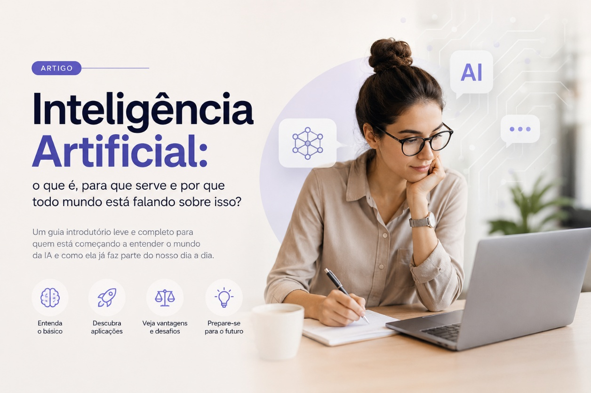
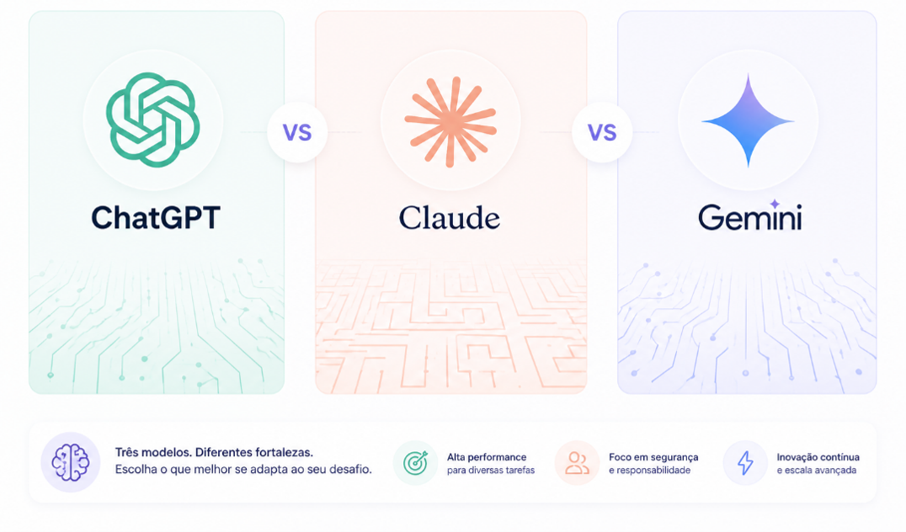
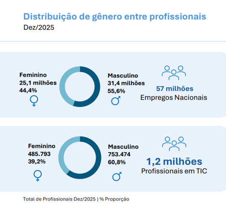

IA: Por que todo mundo está falando sobre isso?
Por Ieda Renata Silva

Durante muito tempo, Inteligência Artificial parecia coisa de filme futurista. Robôs conscientes, máquinas dominando o mundo, computadores super inteligentes… Mas a verdade é que a IA já faz parte do nosso dia a dia há muito tempo — muitas vezes sem que a gente perceba.
Quando o Netflix sugere um filme, quando o Spotify monta uma playlist perfeita, quando o Google entende o que queremos pesquisar ou quando o celular reconhece nosso rosto para desbloquear a tela… tudo isso envolve Inteligência Artificial.
Mas afinal: o que é IA?
O que é Inteligência Artificial?
De forma simples, Inteligência Artificial é a capacidade de sistemas computacionais realizarem tarefas que normalmente exigiriam inteligência humana.
Isso inclui:
- entender linguagem;
- reconhecer imagens;
- aprender padrões;
- tomar decisões;
- responder perguntas;
- criar textos, imagens, músicas e códigos.
A IA não "pensa" como uma pessoa, mas ela aprende. Aprende analisando enormes quantidades de dados e identificando padrões. É como se fosse um cérebro estatístico extremamente rápido.
E onde a IA é usada hoje?
É uma excelente pergunta, e a resposta é muito simples: praticamente em tudo.
Saúde
- auxílio em diagnósticos;
- análise de exames;
- descoberta de medicamentos.
Educação
- plataformas personalizadas;
- correção automática;
- tutores inteligentes.
Empresas
- automação;
- atendimento ao cliente;
- análise de dados;
- produtividade.
Tecnologia
- programação assistida;
- agentes inteligentes;
- geração de código;
- automações complexas.
Redes sociais e entretenimento
- recomendações;
- filtros;
- algoritmos;
- geração de conteúdo.
Hoje, muitas empresas já utilizam IA sem sequer chamar isso de "IA".
O que mudou nos últimos anos?
A grande virada aconteceu quando modelos de linguagem começaram a evoluir rapidamente.

Ferramentas como ChatGPT, Claude, Gemini e outras passaram a conversar naturalmente, escrever textos, programar, resumir documentos, gerar imagens, ajudar em estudos e produtividade e muito mais.
Isso fez com que a IA deixasse de ser algo apenas técnico e passasse a fazer parte da rotina de pessoas comuns. E o mais interessante: não é mais necessário ser engenheiro ou cientista da computação para começar a usar IA.
IA vai substituir pessoas?
Essa talvez seja a pergunta mais comum hoje. A resposta mais realista é: a IA provavelmente não substituirá todas as pessoas, mas pessoas que utilizam IA tendem a substituir quem não utiliza.
A tecnologia está automatizando tarefas repetitivas, operacionais e previsíveis. Porém, criatividade, comunicação, estratégia, empatia e tomada de decisão humana continuam extremamente importantes. Na prática, a IA funciona mais como uma ampliação da capacidade humana do que como um substituto absoluto.

Então vale a pena estudar IA?
Sim, vale, e muito, mesmo para quem não quer trabalhar diretamente com tecnologia.
A IA hoje é uma habilidade transversal, como inglês ou internet se tornaram anos atrás. Entender minimamente como as coisas funcionam, quais são os riscos envolvidos, como utilizar e como se adaptar será um diferencial enorme nos próximos anos. E a melhor notícia: você não precisa começar sabendo tudo.
Mulheres, carreira e tecnologia: um movimento que está crescendo
Cada vez mais mulheres estão entrando no mercado de tecnologia — inclusive após os 35 ou 40 anos. Segundo o Relatório de Diversidade 2025 publicados pela Brasscom em maio de 2026, a participação feminina no setor de TIC no Brasil chegou perto de 40% da força de trabalho em 2025, mostrando crescimento contínuo nos últimos anos.
Em 2025, foram adicionadas 10.328 mulheres e 12.009 homens ao setor de TIC. O total de profissionais cresceu 2,2% entre as mulheres e 1,6% entre os homens em relação a 2024.
Um levantamento da Serasa Experian também apontou crescimento de 4,6% no número de mulheres atuando em tecnologia em apenas um ano. Além disso, pesquisas mostram que mulheres acima de 40 anos estão mais presentes no mercado de trabalho do que nunca, especialmente em movimentos de reinvenção profissional e transição de carreira.

Fonte: Brasscom; RAIS/Caged
Apesar dos desafios — como etarismo e desigualdade de gênero ainda existentes no setor — a maturidade profissional, experiência de vida, comunicação e visão estratégica têm se tornado diferenciais muito valorizados. Muitas empresas começaram a perceber algo importante: soft skills não podem ser substituídas facilmente por máquinas.
E pessoas com trajetória, repertório e capacidade de adaptação têm muito espaço para crescer.
O futuro provavelmente será híbrido
Não parece que o futuro será "humanos versus máquinas". O cenário mais provável é: humanos trabalhando junto com IA.
Os profissionais que conseguirem unir experiência humana, criatividade, comunicação, pensamento crítico e tecnologia tendem a se destacar cada vez mais.
Conclusão
Inteligência Artificial não é mais uma tendência distante: ela já está mudando simplesmente tudo. Empresas, profissões, estudos, comunicação, desenvolvimento de software e até mesmo a maneira como aprendemos.
E talvez a melhor notícia seja esta: ainda estamos no começo. Isso significa que ainda há espaço para aprender, experimentar, mudar de carreira e construir novas possibilidades — independentemente da idade ou da experiência anterior. A tecnologia pode parecer complexa no início, mas ninguém começa sabendo tudo. O mais importante é continuar curioso.